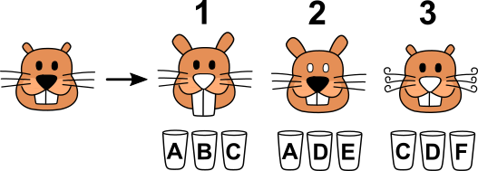

魔法藥劑
海狸魔法師製作了五種魔法藥劑，魔法藥劑的短期作用分別為：
- 使耳朵變長
- 使牙齒變長
- 使鬍鬚蜷曲
- 使鼻子變白
- 使眼睛變白
魔法師將魔法藥劑分別裝入不同的燒杯，且另外裝了一杯白開水（沒有任何魔法作用），所以桌上有標示著A, B, C, D, E, F的六個燒杯。然而，他忘記了每個燒杯裡裝的是哪一個魔法藥劑了！
於是，魔法師做了幾個實驗，試圖分辨每個燒杯裡的內容物。
實驗1：他喝下燒杯A、B、C的混和物後，暫時變成圖1的樣子。
實驗2：他喝下燒杯A、D、E的混和物後，暫時變成圖2的樣子。
實驗3：他喝下燒杯C、D、F的混和物後，暫時變成圖3的樣子。

請問哪個燒杯裡裝的是白開水？